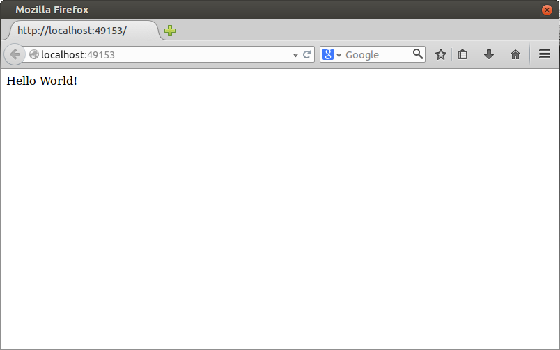
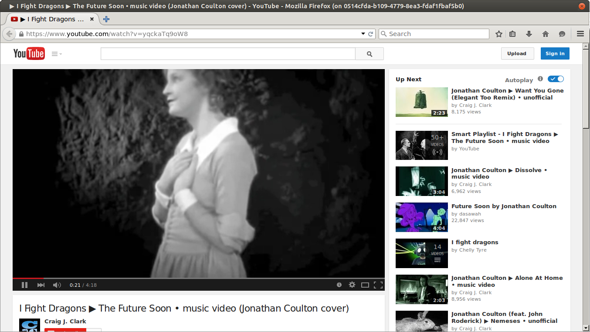

Toothless gives native app developers what web developers have had for years: a user-friendly distribution system. Create a Docker container with your application, make it compatible with Toothless with a few lines in your Dockerfile, and push it to Docker Hub. Distributing your application is now as simple as posting a link.
Toothless does not spurn the web, however. You can create client-side servers with browser frontends, allowing you to run native code to back up your user's frontend experience. See Tutorial #1 for an example of this.
We'll start off with a simple Python web server that echos "Hello World!" to the browser.
You'll need to install Docker to complete these tutorials. The recommended version is currently 1.5.0.
To fully complete these tutorials, you'll need a Docker Hub account. The image name toothless/helloworld will not be available to you; you'll need to use [your docker hub account name]/helloworld.
app.py:
#!/usr/bin/env python
from bottle import route, run
# Simulate slow startup.
import time
time.sleep(5);
@route('/')
def hello():
return "Hello World!"
run(host='0.0.0.0', port=8080)
We're serving "Hello World!" on port 8080. Before we start listening, we add a pause of 5 seconds to simulate work the server needs to do before it can start responding to requests.
Next we'll create a Dockerfile for our app:
# Use the python base image FROM ubuntu # Install Python and the bottle webserver. RUN apt-get update && apt-get install -y python RUN apt-get update && apt-get install -y python-bottle # Copy our application into /app in the container. ADD app /app # Expose port 8080. Toothless will automatically publish # this port to a random port on the host. EXPOSE 8080 # Indicate that this is a toothless app. ENV toothless=true # We want only one instance of this app running at any given time. ENV toothless_singleton=true # Provide an endpoint for Toothless to check to see if the app is ready. ENV toothless_ready_port=8080 ENV toothless_ready_endpoint=/ # Tell Toothless where to redirect the user when they go to the app. ENV toothless_redirect_port=8080 ENV toothless_redirect_endpoint=/ # When our app starts up, go to the /app directory and run ./app.py WORKDIR /app CMD ./app.py
Toothless uses Dockerfile ENV environment variables to define the behavior of an app.
A singleton is an application that is limited to a single instance. This is useful for clientside webservers
or other applications where the developer does not want multiple simultaneous instances. Normal desktop applications
would not use this feature. The singleton state is enabled with the ENV toothless_singleton=true
Dockerfile environment variable definition.
Immediately after an application container has been started, Toothless will continuously hit the endpoint defined by
toothless_ready_endpoint and toothless_ready_port, if they are defined. Once this
endpoint returns a status 200, the user will be redirected to the endpoint defined by
toothless_redirect_endpoint and toothless_redirect_port, if they are defined.
Let's put these files into their own directory, organized thus:
toothless-helloworld/ ├── app │ └── app.py └── Dockerfile
Next we'll build our application image:
sudo docker build -t toothless/helloworld:latest .
Be sure to check out the documentation on docker build so that you understand what is going on with the image tagging here. You won't be able to use toothless/helloworld.
Finally, let's push it to Docker Hub (you'll need an account there if you don't already have one):
sudo docker push toothless/helloworld:latest
The user can launch the app by clicking a link. Here's what that link looks like for this app: http://localhost:9887/app?repo=toothless/helloworld. Clicking this link will redirect the user to the Toothless server on their host, which will take over the launch of the application.
If an application has no running instances when it is launched, Toothless will always try to pull the application image before launching it. This is done so that if you need to change the structure of stored data from one version of your application to the next, you will not need to be concerned that an incompatible instance is simultaneously accessing that data.
Toothless will always pull the :latest version of your image. Versioning is not yet supported.
This tutorial will demonstrate how to set up a typical desktop application with X11 and Pulseaudio support by launching an instance of Firefox and opening a music video on YouTube.
All we'll need for this application is a Dockerfile:
# Use the Ubuntu base image. FROM ubuntu # Install Firefox and PulseAudio RUN apt-get update && apt-get install -y firefox RUN apt-get update && apt-get install -y pulseaudio # We'll need a user for X11 support. RUN useradd -m toothless # Indicate that this is a toothless application. ENV toothless=true # More than one instance of this can be run at once. ENV toothless_singleton=false # Enable X11 and PulseAudio support. ENV toothless_x11=true ENV toothless_pulseaudio=true # When the container launches, switch to the toothless user. USER toothless # Launch a new instance Firefox and open a music video. CMD firefox -new-instance https://www.youtube.com/watch?v=yqckaTq9oW8
The remaining steps are nearly identical to the Hello World! example. Start by setting up the application directory thus:
toothless-firefox/ └── Dockerfile
Then build the image:
sudo docker build -t toothless/firefox:latest .
And finally push the image:
sudo docker push toothless/firefox:latest
The application can be launched via the link http://localhost:9887/app?repo=toothless/firefox. 
Indicates that this application is a Toothless app. Toothless will not launch images that do not have this set to true.
If true, Toothless will not launch a new instance of this application if one is already running.
Use in conjunction with toothless_redirect_endpoint/port to build a standard webapp
with a clientside server.
If these values are set, Toothless will continuously hit the endpoint defined by toothless_ready_endpoint/port,
waiting for a status 200 before redirecting to toothless_redirect_endpoint/port or
indicating that the app has been launched (see toothless_indicate_ready). If these values are not set,
the app will be considered ready immediately after the container starts.
Example:
ENV toothless_ready_endpoint=/_toothless/ready
ENV toothless_ready_port=8080
Toothless would check http://localhost:8080/_toothless/ready in the container.
If these values are set, Toothless will redirect the user's browser to the indicated endpoint after the application has been determined to be ready.
Example:
ENV toothless_redirect_endpoint=/index.html
ENV toothless_redirect_port=8080
Toothless would redirect the user to http://localhost:8080/index.html in the container.
The port that the user is redirected to is not actually the one supplied; Toothless publishes the provided port to a random one on the host, and redirects there.
If this is set and the user has not been redirected via toothless_redirect_endpoint/port, the booting page
will display a message indicating that the application has been started. This can be used for background services that
do not have a user-facing webpage.
If this is set to true, X11 support will be enabled for the application.
Note that a user must be set and in use for X11 support to work. See Tutorial #2 for an example.
If set to true, PulseAudio support will be enabled for the application.
Be sure to install the pulseaudio package in your container, or this may not work.
See Tutorial #2 for an example.
Links for launching Toothless applications are of the form http://localhost:9887/app?repo=application/name
where application/name is the name of your image on Docker Hub, e.g., toothless/helloworld.
Every application is given access to two persistent data stores. The application-specific data should be
stored in /toothless/local, while data to be shared with other Toothless applications should
be written to /toothless/shared. These two paths can be found on the host in
/opt/toothless/app-data/[application-name] and /opt/toothless/app-data/shared.
Note that while other Toothless applications do not have access to application-specific data, the user
can read and write this data at any time, whether your application is running or not.
Containers are discarded after they exit, so any data written anywhere other than /toothless/local
or /toothless/shared will be lost. Do not store important data elsewhere!